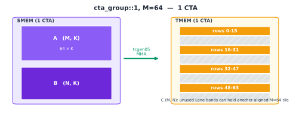
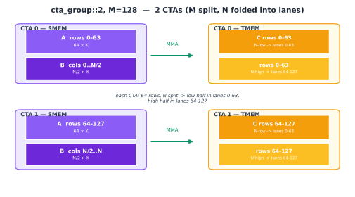

Tensor Cores: tcgen05#
概述
tcgen05是 Blackwell 的 Tensor Core 指令系列。其 MMA 指令协同执行 tile 矩阵乘法累加工作，该指令由选出的一个 thread 执行。累加器位于 TMEM 而不是寄存器中。 epilogue 稍后将其带回到
tcgen05.ld寄存器中。cta_group::1和cta_group::2控制 MMA 上是一台 CTA 还是两台 CTAs 协同工作。该选择还改变了 M 尺寸映射到 TMEM 的方式。块缩放 MMA 模式（例如
mxfp8和nvfp4）添加比例因子操作数。数据操作数位于 SMEM 中，而比例因子则通过 TMEM 暂存。
密集线性代数是现代 GPUs 花费大部分有用工作的地方。普通的 CUDA cores 矩阵乘法无法接近芯片的宣传峰值 (GPU 执行模型)。通过向 Tensor Core 提供正确的 tile shapes、layouts 和同步，快速 GEMM 和 Attention kernels 才能接近峰值。
自 Volta 以来，基本操作在精神上没有改变。 Tensor Core 消耗矩阵 tile，将它们相乘，然后累加结果。每一代的变化在于运算的发出方式、操作数的 layout 方式以及累加器所在的位置。
Blackwell 对最后一部分做了很大的改动。 tcgen05 的累加器不再保留为长寿命寄存器片段。它被写入 Tensor Memory 或 TMEM (特殊存储器：TMEM)。这一更改会影响整个 kernel。 MMA 写入 TMEM。异步跟踪完成情况。 epilogue 稍后将累加器从 TMEM 中加载出来，并将其返回到需要转换和存储的寄存器片段。
本章重点讨论计算指令本身。 TMA (异步数据移动：TMA) 负责将操作数移入 SMEM。 TMEM 负责保存累加器和一些比例因子操作数。 tcgen05.mma 是位于这两个内存移动之间的 Tensor Core 操作。
交互式：tcgen05 累加器行为。切换 A 或 B 的转置，选择输出宽度 N，并逐步执行 K 迭代以观察 TMEM 中的部分和累积。
tcgen05 MMA#
tcgen05 MMA 是 Blackwell Tensor Core 矩阵乘法累加指令。这是一个合作指令。该工作是针对 warpgroup 执行的，在某些模式下，它可能涉及来自同一 cluster 的两个 CTAs。该指令并非由每个 thread 独立发出。选出的一名 thread 代表参与组提交操作。
它有助于将 MMA 分成三个问题。
第一个问题是谁合作。普通模式使用一个 CTA，写为cta_group::1。更大的模式在一个 cluster 中使用两个 CTAs，写为cta_group::2。在这两种情况下，指令表示对 tile 的一个 Tensor Core 操作，而不是一个 thread 的标量操作。
第二个问题是操作数和结果存放在哪里。数据操作数通常位于 SMEM 中。某些变体还可以从 TMEM 读取 A 操作数。累加器写入 TMEM。操作数 layouts 必须与 Tensor Core 期望的内容匹配，包括数据操作数 (数据 layout 及其表示法) 使用的混合共享内存 layouts。
第三个问题是如何观察完成情况。 tcgen05.mma 是异步的。发出 MMA 并不意味着乘法累加已经完成。指令在提交操作后返回，而 Tensor Core 继续运行。 kernel 使用提交组和 mbarrier 来了解结果何时准备就绪 (异步协调：mbarriers)。
这种异步行为使得重叠成为可能。快速的 kernel 不会发出 MMA 并立即停止，直到完成。它可以发出 MMA，开始准备后面的 tile，并仅在实际需要结果时等待。代价是每次切换都必须是明确的。如果 epilogue 在 MMA 完成 barrier 触发之前读取到 TMEM，则读取得太早。
累加器位于 TMEM#
在 Ampere 和 Hopper 上，累加器作为寄存器暴露给程序。 MMA 生成每 lane 寄存器片段，epilogue 直接使用该片段。这很简单，但它将累加器大小与每个 thread 的寄存器预算联系起来。
Blackwell 破坏了该链接。 tcgen05.mma 将其累加器写入 TMEM，这是一个范围为 CTA 的 Blackwell 内存空间。累加器可以在计算阶段停留在 TMEM 中，epilogue 稍后使用 tcgen05.ld 将其加载回寄存器中。
这改变了 kernel 的形状。寄存器片段在边缘仍然很重要。 epilogue 仍然需要寄存器，以便它可以转换、应用元素工作并存储结果。但长寿命累加器状态不再是寄存器分配问题。这是一个 TMEM 分配和 layout 问题 (特殊存储器：TMEM)。
这就是为什么tcgen05和 TMEM 必须一起理解。 MMA 指令决定计算哪个 tile。 TMEM 决定累加器降落的位置。 epilogue 必须使用匹配的加载路径来恢复它所期望的寄存器 layout 中的累加器。
cta_group::1 和 cta_group::2#
tcgen05 MMA 可以在 cta_group::1 或 cta_group::2 模式下运行。
在 cta_group::1 中，一台 CTA 拥有 MMA。其操作数在 CTA 的 SMEM 中，其累加器写入 CTA 的 TMEM 中。
在cta_group::2中，cluster 中的两个 CTAs 在一个 MMAtile 上协作。每个 CTA 都有自己的 SMEM 和自己的 TMEM。累加器未存储在跨越两个 CTAs 的一个物理 TMEM 区域中。它分为两个 CTAs，每个 CTA 都有自己的部分。偶数 CTA 发出指令并提交该对的完成 barrier。
该选择很重要，因为它改变了逻辑累加器块 C(M, N) 映射到 TMEM 的方式。 TMEM 具有 128 个硬件 Lane 行和最多 512 个硬件 Col 列。在 TIRx layout 表示法中，这些轴被写为 TLane 和 TCol。 MMA 模式决定 C 的行和列如何放置到这些 TMEM 轴上。
有四个有用的案例需要记住。
下图遵循演示颜色约定：紫色标记 SMEM 操作数，橙色标记 TMEM 累加器状态，绿色标记 Tensor Core MMA 路径。 CTA 身份是通过标签和位置来显示的，而不是通过更改这些硬件颜色来显示。
cta_group::1、M = 128#
这是最简单的情况。一个 CTA 计算 128 行 tile。 TMEM 也有 128 lane 行。因此，映射是直接的：累加器的行 m 映射到 Lane m，N 维映射到 TMEM 列。
结果填充 128 Lane 行乘 N Col 列。这是基线图片。 CTA 在 SMEM 中拥有 A 和 B，并且在其 TMEM 中拥有完整的累加器块。

cta_group::1、M = 64#
对于 M = 64，累加器只有 64 行，但 TMEM 仍然有 128 lane 行。硬件不会简单地将第 0 行到第 63 行打包到 lane 0 到第 63 中。相反，它将它们分布在 128 个 lane 中，分四次运行，每行 16 行。
第 0 行到第 15 行连接到泳道 0 到 15。第 16 到 31 行连接到泳道 32 到 47。第 32 到 47 行连接到泳道 64 到 79。第 48 到 63 行连接到泳道 96 到 111。
这会在泳道 16 到 31、48 到 63、80 到 95 以及 112 到 127 处留下间隙。这些间隙是故意的。通过不同的 lane 对齐，另一个独立的 M = 64 MMA 可以占用互补 lane。这使得两个较小的 M 块共享 128 lane TMEM 结构，而不会互相踩踏。
N 维度仍映射到 TMEM 列。不寻常的部分只是 M 行跨 lane 的放置。

cta_group::2、M = 256#
当 M 尺寸大于 1 个 CTA 自然可以容纳时，MMA 可以使用cta_group::2。对于M = 256，分割是直接的。 CTA 0 保存第 0 行到第 127 行。 CTA 1 保存第 128 行到第 255 行。
每个 CTA 使用自己的 TMEM Lane 0 到 127 行以及完整的 N 列。从物理上讲，这是两个独立的 128 行 TMEM 区域，每个 CTA 中有一个区域。从逻辑上讲，它们形成一个 256 x N 累加器块。
每个 CTA 还提供 A 中与其 M 行相对应的部分。根据模式要求，B 对 CTAs 均可用。偶数 CTA 负责发布 MMA 并提交该对的完成 barrier。
这是 通过 Warp 专业化和 cluster 扩展 GEMM 中的两个 CTA cluster GEMM 使用的模式。

cta_group::2、M = 128#
cta_group::2、M = 128模式仍然使用两个 CTAs，但 M 尺寸更短。由于总共只有 128 行，因此每个 CTA 接收 64 M 行。
剩余的 lane 容量用于打包 N 维度。在每个 CTA 内部，N 的一半占用 lane 0 到 63，N 的另一半占用 lane 64 到 127。这使得每个 CTA 可以使用所有 128 行 lane，即使它只拥有 64 行 M。
所以分裂有两个部分。 M 分布在 CTA 对上，每个 CTA 有 64 行。然后，N 在每个 CTA 内被拆分到 TMEM lane 行的下半部分和上半部分。

在这些模式中，原理是相同的。 tcgen05.mma 计算逻辑累加器 tile，但该 tile 必须放置到物理 128 lane 中最多 512 Col TMEM 空间。模式和 M 形状决定了该位置。 kernel 的其余部分在稍后读回累加器时必须使用相同的映射。
对于这里的 kernels，TMEM 中的累加器通常是 f32。这就是常见的高精度路径。它不是唯一可能的累加器类型。 .kind::f16 路径可以在 f16 中累积。
操作数放置#
对于密集 MMA 模式，A 和 B 在 MMA 运行之前在 SMEM 中准备好。 TMA 负责将全局内存块移至 SMEM 中。 kernel 将 Tensor Core 所期望的 layouts 中的 SMEM 区块进行排列，包括任何所需的 swizzle。
将累加器 C 写入 TMEM。这是与前几代人的主要区别。 epilogue 不直接接收累加器作为 MMA 指令的输出。它必须使用 tcgen05.ld 从 TMEM 显式加载。
在cta_group::1中，一个 CTA 提供操作数并拥有累加器。在cta_group::2中，每个 CTA 从其自己的 SMEM 提供其自己的操作数，并且每个 CTA 拥有其自己的累加器的 TMEM 部分。当 A 被 M 分割时，每个 CTA 为自己的 M 切片保留 A 行。 B 根据模式共享，因为两个 M 片都乘以 K tile 与相同的 N。
在读取 kernel 时，这种分离很重要。 SMEM layout 回答了 Tensor Core 如何读取 A 和 B。 TMEM layout 回答了累加器的去向。两个 layouts 通过 MMA 模式相关，但它们不是相同的内存空间，不能互换。
块级 MMA#
密集模式直接从 SMEM 读取数据操作数并累加到 TMEM 中。块缩放 MMA 又添加了两个操作数：A 和 B 的比例因子张量。
这用于非常低精度的格式，例如 mxfp8 和 nvfp4。低精度格式效率较高，但动态范围较小。单一的全球尺度通常过于粗糙。如果选择最大值的比例，较小的值会失去精度。如果选择较小值的比例，则较大的值可能会被剪切。
块缩放通过将比例因子分配给小 K 块来修复此问题。一组连续的 K 元素共享一个刻度。 MMA 在概念上用每个块的标度去量化，然后将乘积累加到累加器类型中。
对于 A 和 B，这引入了两个比例因子张量：
SFA(M, SFK)
SFB(N, SFK)
其中 SFK = K / B 和 B 是沿 K 的块大小。
确切的块大小取决于格式。重要的一点是，刻度轴以较粗的粒度遵循 K。每个比例因子描述一组 K 值，而不是单个元素，也不是整个矩阵。
数学形状为：
acc += (Aq * scale_a) * (Bq * scale_b)
其中Aq和Bq是量化的低精度值，尺度恢复累加前的近似大小。
比例尺 dtype 也很重要。对于 e8m0 尺度，每个尺度实际上是 2 的幂。对于 e4m3 刻度（如 nvfp4 使用的那样），刻度是一个小浮点值，可以表示 2 的幂之间的值。
比例因子存在的地方#
块缩放 tcgen05.mma 与密集 MMA 的不同之处在于一项重要的放置规则：缩放因子从 TMEM 读取。
数据操作数 A 和 B 仍然暂存在 SMEM 中。比例因子 SFA 和 SFB 通过 TMEM 进行分级。由于 TMA 加载到 SMEM 中，比例因子通常需要额外的一步。 kernel 首先将它们加载到 SMEM 中，然后用tcgen05.cp将它们从 SMEM 复制到 TMEM。只有比例因子存入 TMEM 后，block-scaled MMA 才能读取它们。
这为比例因子提供了与数据操作数不同的移动路径：
A, B: global memory to SMEM, then MMA reads SMEM
SFA, SFB: global memory to SMEM, then tcgen05.cp copies SMEM to TMEM, then MMA reads TMEM
用于比例因子的 TMEM layout 结构紧凑。 128 行尺度向量可以打包成 32 行 lane，使用基于 r % 32 的 lane 位置映射和 r / 32 沿列的映射。然后，数据可以在读取完整 128 lane 空间 (Tensor Core 各代 GPU 操作数 layout) 的四个 warps 上广播。
这是为什么 TMEM layout 必须显式的一个很好的例子。累加器 layout 和比例因子 layout 都在 TMEM 中，但它们不是同一个 layout。累加器使用 MMA 输出映射。比例因子使用 block-scaled MMA 所期望的紧凑型 layout。
cta_group::2 中的比例因子#
在两个 CTA 的情况下，比例因子遵循它们缩放的数据。
SFA 缩放 A。由于 A 在 CTA 对中被 M 分割，所以 SFA 也被 M 分割。每个 CTA 保存与其自己的 A 行相对应的 SFA 行。
SFB 缩放 B。由于两个 CTAs 都与相同的 B tile 相乘，因此 SFB 必须对两个 CTAs 都可见。实际上，这意味着 SFB 在 CTA 对上进行多播。
这是 block-scaled cluster GEMM 中常见加载模式的来源。 SFA 按 CTA 加载，使用 CTA 自己的 M 切片的掩码。 SFB 被广播到该对，因为两个 CTAs 需要相同的 N 侧比例因子。

保持 MMA 合约匹配#
Blackwell GEMM 块通过多个专用路径移动。
TMA 将 A 和 B 从全局存储器带入 SMEM。对于 block-scaled 模式，它还将比例因子带入 SMEM 中。 tcgen05.cp 在需要时将这些比例因子移动到 TMEM 中。 tcgen05.mma读取其操作数，在 Tensor Core 上异步运行，并累加到 TMEM 中。完成 barrier 告诉 kernel 该累加器何时准备就绪。然后 epilogue 使用 tcgen05.ld 将累加器从 TMEM 加载回寄存器并存储最终输出。
在这些路径中，kernel 必须保持三个合约匹配：SMEM 操作数 layout、TMEM 累加器或比例因子 layout 以及使下一个消费者安全运行的异步完成信号。